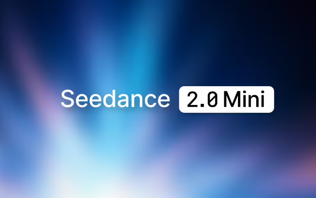
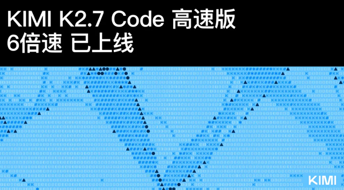
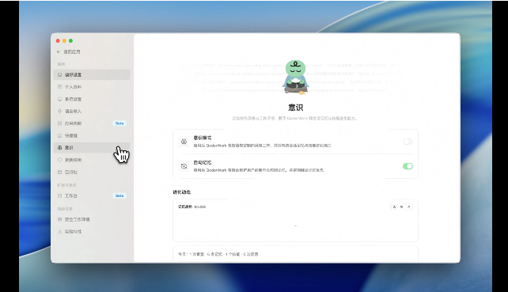
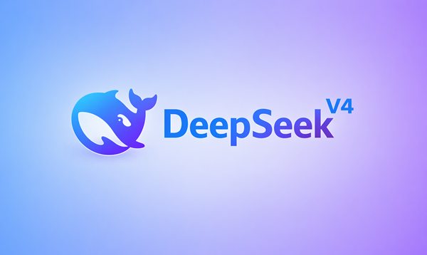
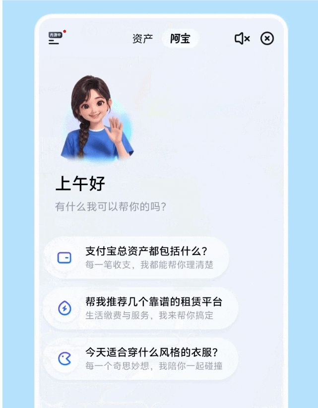

ByteDance Unveils Seedance 2.0 Mini; Kimi 2.7 Code High-Speed LLM Debuts; DeepSeek Closes $7B+ Series A at $50B+ Valuation
Welcome to AI Daily — your essential daily briefing on the AI landscape. Each edition delivers curated industry highlights for developers, offering insight into emerging technology trends and cutting-edge AI product applications.
Explore new AI products at: https://app.aibase.com/zh
1. ByteDance Unveils Seedance 2.0 Mini, Halving Per-Second Video Generation Cost.
ByteDance's Volcano Engine introduces Seedance 2.0 Mini, a high-value video generation model that halves per-second cost while supporting a broad range of video styles.

📌 🎬 Volcano Engine Debuts Seedance 2.0 Mini, Halving Per-Second Cost. 🎥 Supports Diverse Video Styles and Resolution Outputs.
2. Kimi 2.7 Code High-Speed LLM Goes Live
Moonshot AI's Kimi rolls out the 2.7 Code high-speed large language model, delivering substantial gains in code generation and understanding with extended context support.

📌 💻 Kimi 2.7 Code High-Speed Version Debuts. ⚡ Code Generation and Comprehension Strengthened Significantly.
3. DeepSeek Closes $7B+ Series A
DeepSeek raised more than $7 billion in its Series A, pushing its valuation past $50 billion and ranking among the world's most valuable AI startups.

📌 💰 DeepSeek Raises $7B+ in Series A. 📈 Valuation Surpasses $50B.
4. Zhipu AI Unveils GLM-5 Model Family
Zhipu AI formally introduces the GLM-5 model family, marking a breakthrough in multimodal comprehension and reasoning.

5. Alibaba Tongyi Qianwen Enhances Multimodal Capabilities
Alibaba's Tongyi Qianwen model enhances multimodal comprehension, now supporting image, video, audio, and additional input modalities.

6. OpenAI Rolls Out ChatGPT Memory System Upgrade
OpenAI has significantly upgraded ChatGPT's memory system, leveraging the Dreaming V3 mechanism to resolve issues of memory staleness and accuracy.
📌 🧠 ChatGPT Memory System Upgraded via Dreaming V3. 🔄 System Automatically Refreshes User Profiles. ⚡ Compute Costs Slashed to One-Fifth.
7. Tencent Cloud Launches ADP 4.0 Platform
Tencent Cloud unveils ADP 4.0 with a new Claw mode, enabling agent construction and execution for complex workflows.
📌 🧠 ADP 4.0 Introduces Claw Mode for Complex-Task Agent Construction. 🌐 Integrates Enterprise Systems Through Connector, Skills, and Other Tools.
8. NBA China and Alibaba Join Forces to Launch NBA Chat LLM
NBA China and Alibaba have jointly launched NBA Chat, the first official large language model built on Alibaba's Qianwen architecture.
📌 🏀 NBA China and Alibaba Launch First Official LLM: NBA Chat. 🧠 Built on the Qianwen Model, Fusing Game Data and Player Analytics.